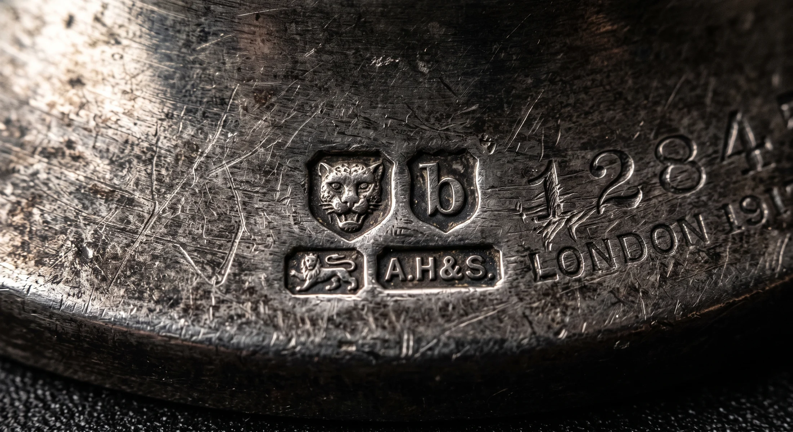
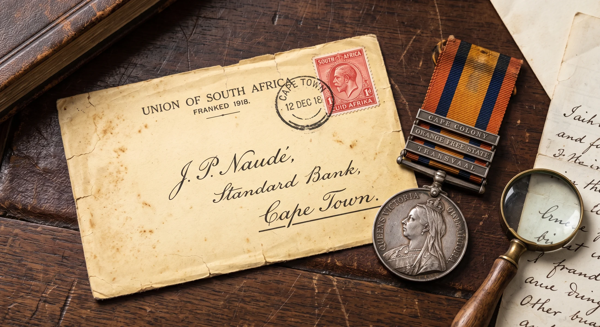
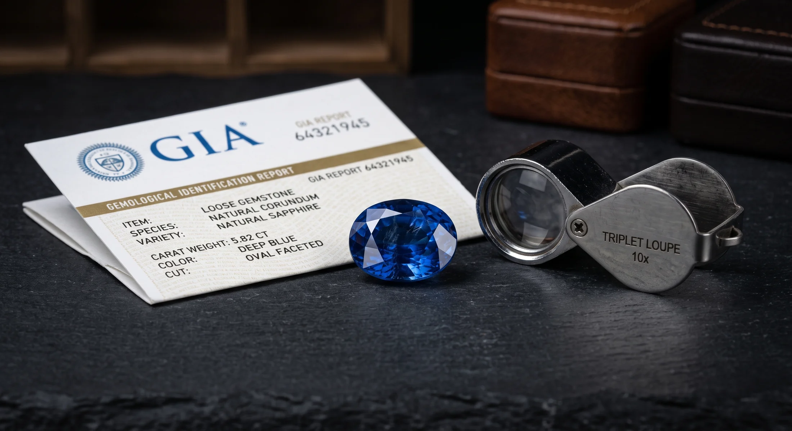
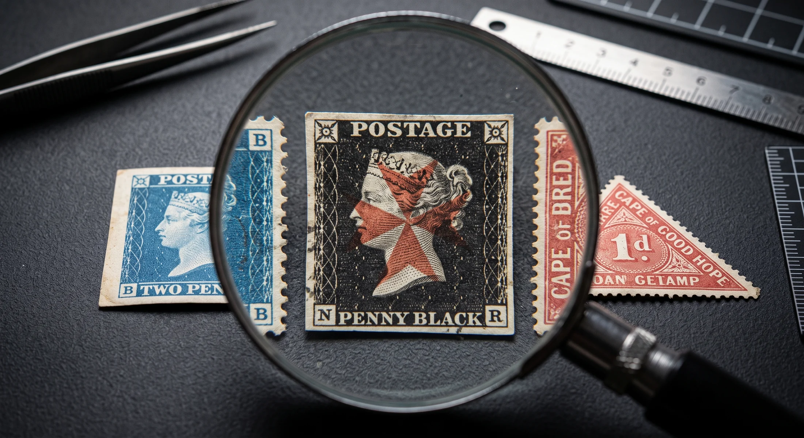
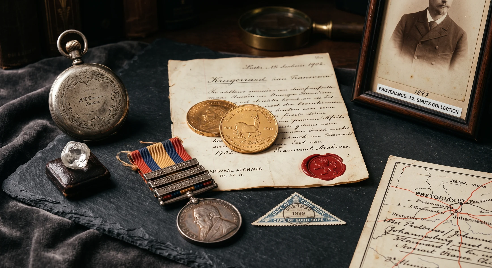
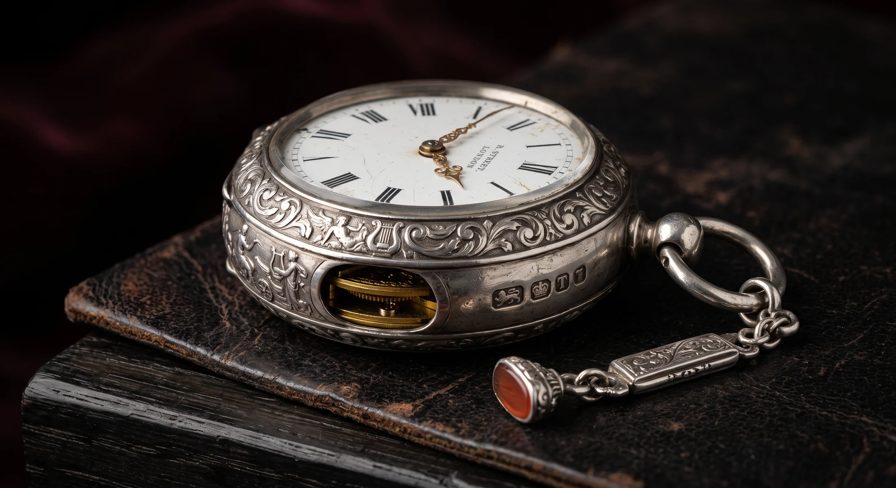
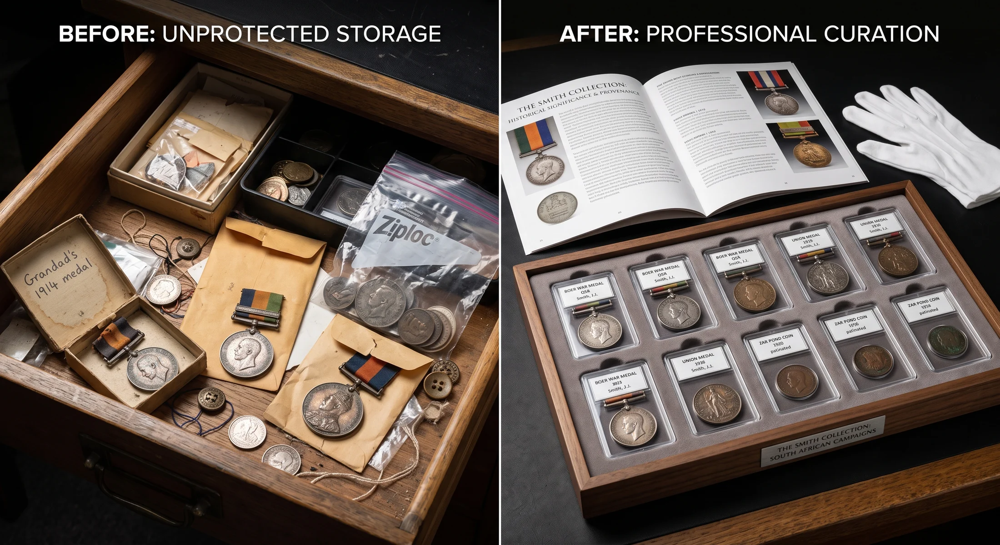
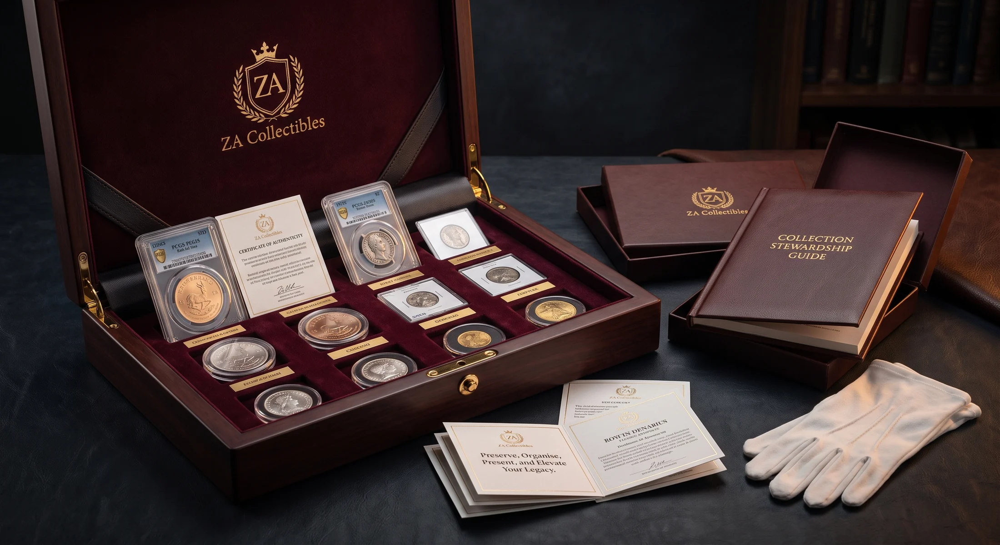
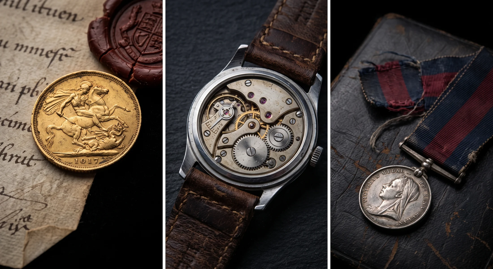
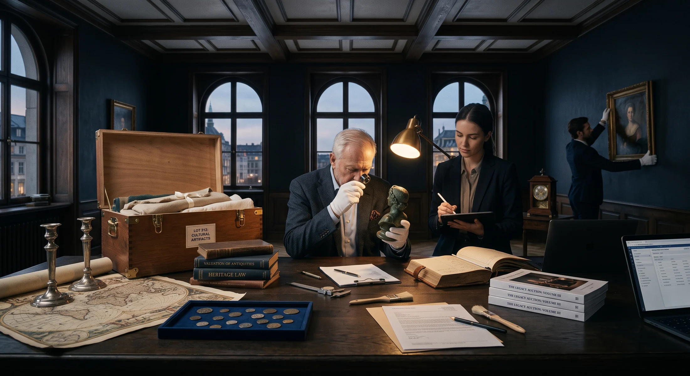

HERITAGE / OBJECTS / COLLECTING CULTURE
Where collections
become legacies.
A coin can outlive an empire. A medal can hold a lifetime in a few grams of metal. A stamp can carry the memory of a country that no longer exists. ZA Collectibles exists to look closer, uncover the story and help it endure.
ZA COLLECTIBLES / THE HOUSE
History is more interesting when you can hold it.
We work with objects because they carry more than material value. They carry evidence, memory, craft, ownership and possibility. Some need to be understood. Some need to be found. Some deserve to be kept beautifully. Some are ready for their next owner.
About ZA Collectibles →THE HOUSE / SIX WAYS IN
Start with the object. The route can follow.
Different questions lead into the same house. Appraisal, research, acquisition, sale, presentation and collecting knowledge remain connected.
Appraise & research
Identification, valuation, provenance and specialist review.
02 / ACQUIREFind something remarkable
Current curation, private sales and selected objects.
03 / MOVESell or consign
Choose the route that suits the object and the owner.
04 / SOURCEComplete the collection
Want lists, private sourcing and difficult-to-find pieces.
05 / PRESENTMake it worth keeping
Curate, document, protect and present the collection properly.
06 / DISCOVERFollow the story
Object histories, unusual facts, collecting guides and research notes.

LOOK CLOSER / TEST YOUR EYE
Real or reproduction?
Collectors learn to distrust the obvious view. Marks, wear, edges, tooling and context can matter more than the first impression. Start with the detail.
Make the call, then reveal the collecting lesson.
DISCIPLINES / MATERIAL CULTURE
Different objects ask different questions.
Each field has its own clues, specialist language and collecting culture. The interface changes with the object rather than forcing everything into one retail template.

Militaria & Medals
Gemstones & Jewellery
Stamps & Postal History
Historical Weapons & Objects
Watches & Timepieces
PRESENTATION / CURATION / PRESERVATION
From a box of things
to a collection.
The object does not have to change for its value to change. Order, context, protection and narrative alter the way a collection is experienced. We build presentation systems, albums, cards, catalogues and historical booklets that make collections easier to understand and harder to forget.
Explore collection presentationZA COLLECTIBLES / NOW
Work, research and objects in motion.

Presentation as preservation
Taking a group of objects beyond storage and turning it into something that carries its own historical logic.
The story behind the object
Research notes, object histories and the small clues worth noticing.

Selected objects
Pieces chosen for history, material interest and collector appeal.
THE PEOPLE BEHIND THE OBJECTS
Old things. Modern tools. Human judgement.
ZA Collectibles brings together long-standing collecting experience, specialist interests, marketplace activity and a willingness to investigate the unusual. Technology should make the past more legible, not flatten it into a commodity.

BEGIN WITH CURIOSITY